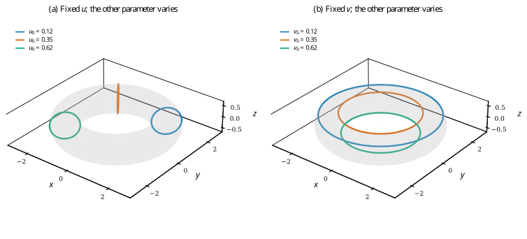

Extracting isoparametric curves from surfaces#
An isoparametric curve is a section obtained by holding one parameter constant. It is useful for inspecting a surface, measuring a section, extracting patch boundaries or passing surface sections to curve algorithms. It is not generally an intersection with a Cartesian plane.
Fix one parameter#
Write a tensor-product NURBS surface as
For a fixed \(u=u_0\), collect the terms that do not depend on \(v\):
Then the section is itself a NURBS curve,
It retains degree \(q\) and the surface’s \(v\) knot vector. Fixing \(v=v_0\) gives the analogous curve in \(u\), with degree \(p\) and the \(u\) knot vector. Positive surface weights give positive section weights within the active domain.
This is an exact algebraic extraction, up to floating-point arithmetic. It does not fit a new curve to sampled positions. In homogeneous coordinates, the implementation simply contracts the control net with the basis vector in the fixed direction and then divides by the resulting weights.


Sections extracted from an exact NURBS torus. Here \(u\) follows revolution and
\(v\) follows the generating circle. Fixed-\(u\) sections follow the tube profile;
fixed-\(v\) sections follow revolution. Each colored curve is a returned
NurbsCurve, not a polyline used to reconstruct the surface.#
API and parameter convention#
Both backends provide the same extraction names:
import numpy as np
import nurbspy as nrb
# A bilinear patch, with coordinates first and control-net indices last.
P = np.array([[[0., 0.], [2., 2.]],
[[0., 1.], [0., 1.]],
[[0., 0.], [0., 1.]]])
surface = nrb.NurbsSurface(P)
section = surface.get_isocurve_u(0.3) # Fix u; section parameter is v.
t = np.linspace(0., 1., 100)
points = section.get_value(t)
direct = surface.get_value(np.full_like(t, 0.3), t)
np.testing.assert_allclose(points, direct, atol=1e-12)
get_isocurve_u(u0) fixes \(u\); it does not return a curve whose varying
parameter is \(u\). This naming distinction matters when assigning boundary
conditions or interpreting plot labels. The surface evaluator pairs arrays
element by element: use matching fixed/variable arrays as in the example.
The returned curve supports ordinary curve operations: values, derivatives, tangents, curvature and length. In particular,
Use the length method appropriate to the returned backend and required accuracy. For an explicit knot vector, sample over the section’s active knot domain rather than assuming \([0,1]\).
Boundaries, orientation and sensitivities#
For a clamped surface, fixing a parameter at an endpoint extracts a boundary curve. The section’s direction follows the increasing remaining parameter. That is not automatically the orientation needed to traverse all boundaries of a patch consistently. Reverse the traversal where an application requires an oriented boundary loop.
A closed surface can have coincident endpoint sections representing a seam. They are distinct parameter locations even though the positions agree. For example, the torus in the figure closes in both directions.
JAX extraction is differentiable in control points, weights and a scalar fixed parameter where the relevant basis functions are smooth. Repeated knots and patch joins require the usual one-sided interpretation. Changing the fixed parameter changes the section geometry; a previously extracted curve is not a live view that updates when its original surface changes.
Reproduce the figure#
python docs/generate_theory_images.py --only isocurves
The figure script compares every extracted
curve against direct surface evaluation. Download the vector PDF.